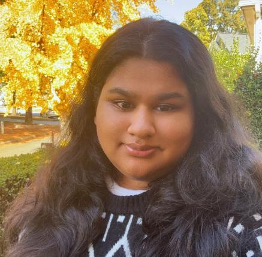

Raiyan Ajanta
Atlanta, Georgia Chapter Creative Director
Hi, I'm Raiyan! I love being creative and finding fun, meaningful ways to spread positivity. Painting, drawing, and working on expressive projects help me bring my ideas to life.
I'm also deeply passionate about science, and I hope to become a neurosurgeon in the future. I'm very involved in the fields of healthcare and science through HOSA and SHS, where I continue to learn, grow, and connect with others who share the same passion. I'm excited to be part of HFH and look forward to connecting with everyone and contributing in any way I can!